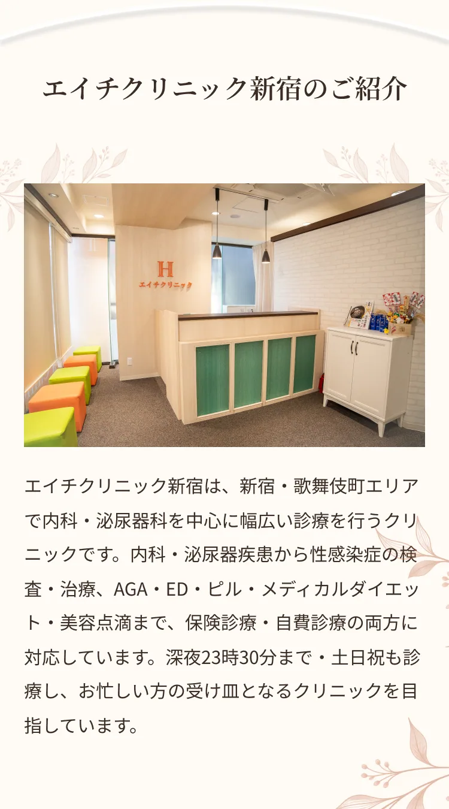
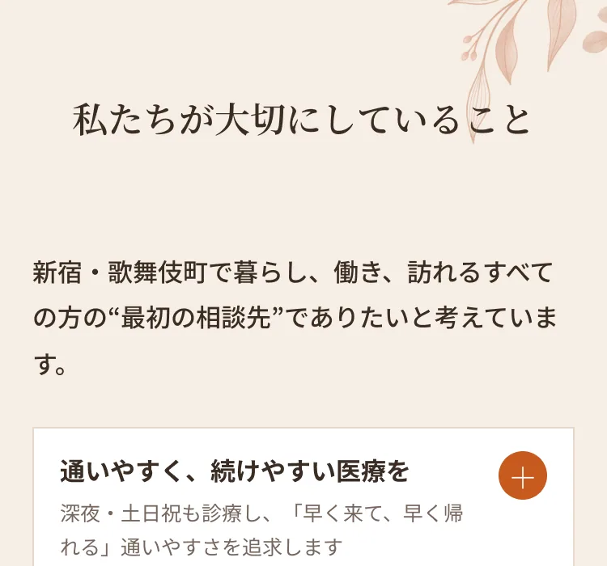
日中は仕事で受診が難しい方、夜間に体調を崩した方が、我慢したり後回しにしたりせずに済むように。当院は深夜23時30分まで、土日祝も診療し、予約時間を細かく設定して待ち時間を抑えています。院内でお薬をお渡しできる体制も整え、「早く来て、早く帰れる」通いやすさを追求します。健康管理は続けてこそ意味があるからこそ、無理なく通い続けられるクリニックを目指します。
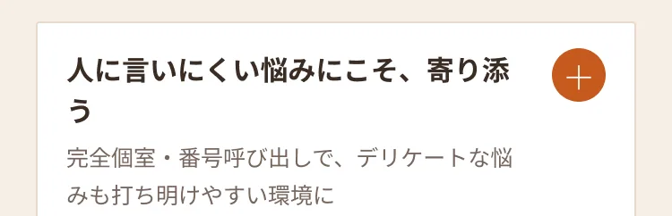
泌尿器のトラブルや性感染症、AGA・ED、避妊など、人にはなかなか相談しづらい悩みは少なくありません。当院はそうしたデリケートな悩みにこそ向き合うために、完全個室・呼び出し番号制を採用し、他の方と顔を合わせにくい環境を整えています。匿名での検査や、できるだけ早く結果がわかる体制も、「相談したいけれど一歩を踏み出せない」という気持ちに応えるためのものです。どんな悩みも、まず安心して打ち明けられる場所でありたいと考えています。
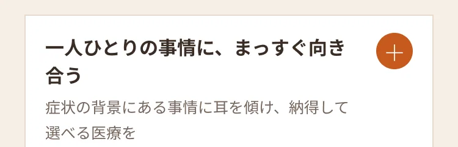
同じ症状でも、その背景にある生活や事情は人それぞれです。当院は、目の前の症状だけを診るのではなく、その方がどんな状況で、何に困っているのかに耳を傾けることを大切にしています。専門的な検査や治療はもちろん、なぜその治療が必要なのか、どんな選択肢があるのかを丁寧にお伝えし、患者さんご自身が納得して選べるように支えます。押しつけではなく、対話から始まる医療を心がけています。
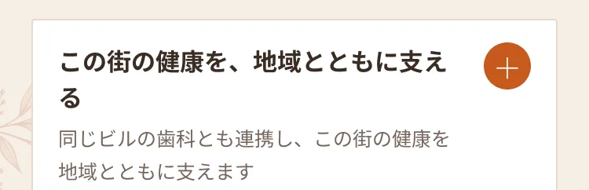
院長の専門である泌尿器科と、当院が力を入れる感染症の診療は、多くの人が行き交う新宿・歌舞伎町という街と深く結びついています。早期に相談できる窓口があること自体が、重症化を防ぎ、街全体の健康を守ることにつながると私たちは考えています。また、同じビル内の歯科をはじめとする連携を通じて、口腔から全身まで、患者さんの健康をトータルで支える体制づくりを進めていきます。この街に根ざし、地域とともに歩むクリニックであり続けます。
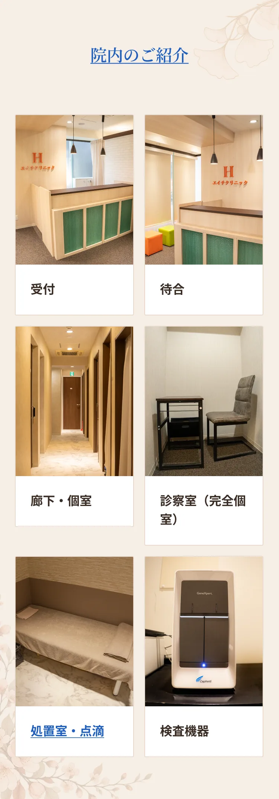
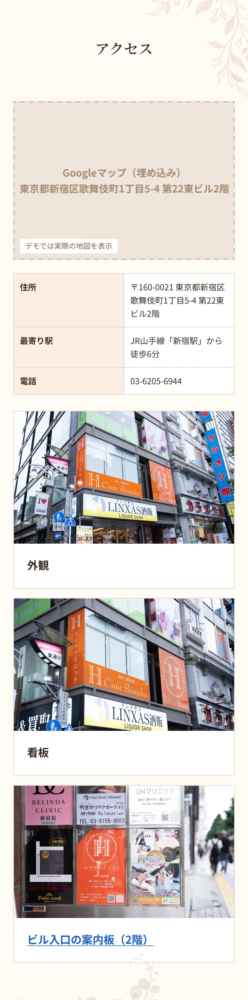
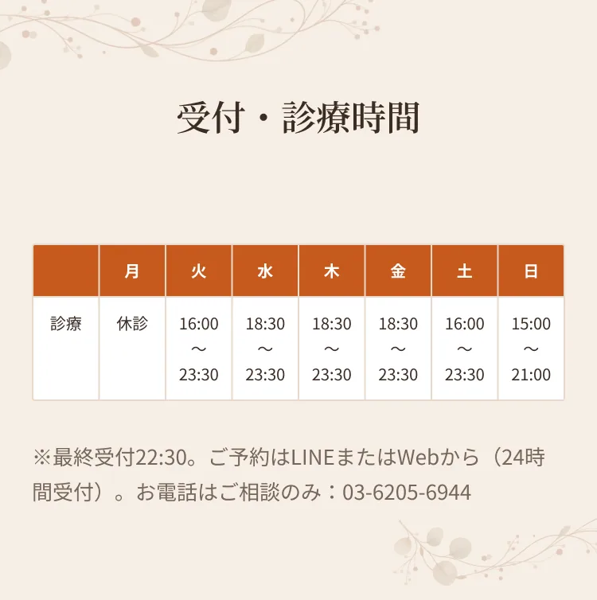
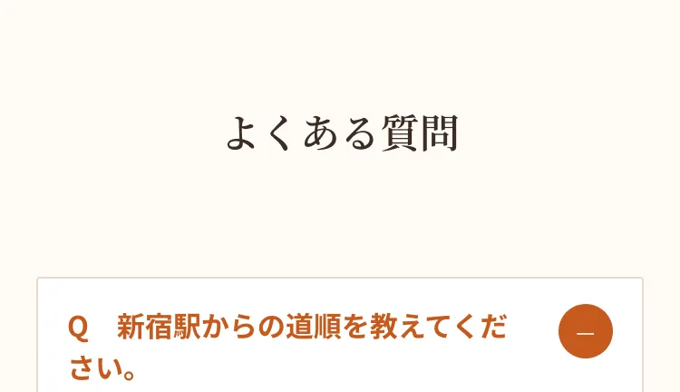
A.JR新宿駅から徒歩6分、歌舞伎町1丁目の第22東ビル2階です。
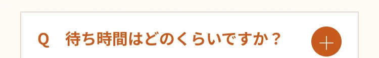
A.完全予約制のため、ご予約の時間に合わせてご案内しています。予約なしの場合はお待ち時間をいただくことがあります。
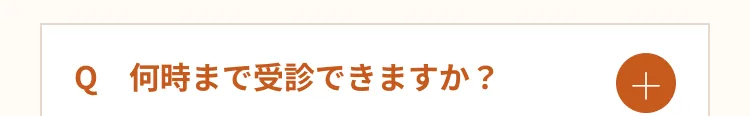
A.診療は深夜23:30まで(最終受付22:30)。お仕事帰りや、他院が閉まる時間帯でも受診いただけます。